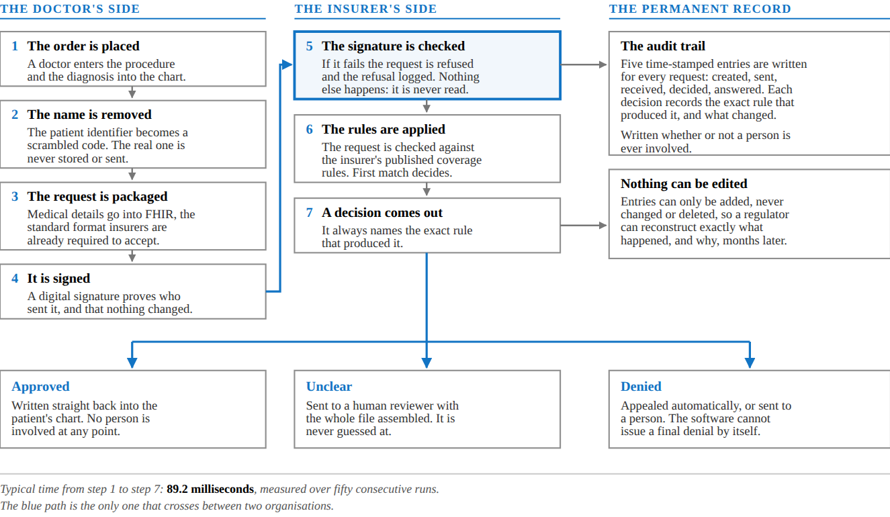

Pavo Cloud
Autonomous Prior Authorization
The insurer's answer in 88.6 milliseconds. The whole round trip in under five minutes, not three to fourteen days.
Dhanvanth Lakshman, CFO · Viraj Gadeela, CTO · Harry Wang, CEO
The insurer's answer in 88.6 milliseconds. The whole round trip in under five minutes, not three to fourteen days.
Dhanvanth Lakshman, CFO · Viraj Gadeela, CTO · Harry Wang, CEO
Before many procedures, the insurer has to agree to pay. In practice that is a member of staff filling in a form, faxing it, and then waiting.
Most of that $35 billion buys nothing. The great majority of requests are approved anyway, just late.
Clinical documentation leaves the record system directly. No staff touchpoint, no portal login.
The full decision path takes 88.6 milliseconds, and 84.0 of those are the two RSA-2048 signatures every authorization writes. The deciding itself is the cheap part.
A human reviewer opens a file that is already complete: records, rule, signature check, confidence score.
Medical necessity remains a physician's call. Only the administrative burden disappears.

$ git log --first-parent --pretty="%h %ad %s"
0a24def 2026-09-19 Document the setting that
keeps the site private (#11)
bb02bc4 2026-09-19 Give the site a real mark (#12)
cd0891a 2026-09-19 Make a broken deployment
say so (#10)
ee9ed87 2026-09-18 Fix the request detail page (#9)
84c4ca5 2026-09-18 Turn the demo into a website (#8)
8b23760 2026-09-18 Make the demo deployable (#6)
$ git log --shortstat
18 commits · 260 file changes
+22,739 insertions · -1,215 deletions
Not mock-ups. Both screens are the same build that would go to a customer.


Same input, same answer, every time, and every answer names the exact rule behind it.
Identity checks · coverage rules · price arithmetic · denial-reason sorting
Every result carries a confidence score. Below the threshold it goes to a person.
Reading insurance cards · mapping plain English to a medical code · drafting appeal letters
These are real limitations of a prototype. We would rather state them than be caught by them.
| Gap | What it needs |
|---|---|
| The privacy proof reveals which covered condition a patient has | A more advanced circuit design. Scoped for the next phase. |
| The proof's setup was done on one machine | A proper multi-party ceremony before any real use. |
| Provider identity is trusted, not verified | One integration against the federal provider registry. |
| Facility prices are generated, not gathered | The voice agent that calls facilities, plus the price files insurers must now publish. |
| Five coverage rules, not a rule library | Clinical staff encoding each insurer's criteria: our largest cost, and the real barrier to a competitor. |
| The learning layer is not built | Deliberate. Until it exists, anything without a definitive rule goes to a person, which is the correct default anyway. |
| Capability | Pavo Cloud | Cohere Health | Availity AuthAI |
|---|---|---|---|
| Software can start a request with no human | ✓ | – | – |
| Decision without a human in the loop for clear cases | ✓ | – | – |
| Cryptographic sender verification | ✓ | partial | partial |
| Zero-knowledge patient privacy proof | ✓ | – | – |
| Source | 2026 | 2027 | 2028 |
|---|---|---|---|
| Medical practices served (average) | 55 | 330 | 1,400 |
| Requests processed | 171,600 | 1,647,360 | 8,736,000 |
| Fees per request | $514,800 | $4,942,080 | $26,208,000 |
| Practice subscriptions | $264,000 | $1,584,000 | $6,720,000 |
| Insurer connection fees | $220,000 | $1,680,000 | $3,200,000 |
| Total revenue | $998,800 | $8,206,080 | $36,128,000 |
Processing one request costs about six hundredths of a cent, because the deciding path uses no AI models at all.
Translating each insurer's published rules into the fixed rules the software applies is the largest line in every year, and the reason margins improve with scale rather than with technology.
Acquisition cost is what it costs in sales and marketing to sign one customer. Lifetime value is the profit that customer produces before they leave, stated over three years.
| Measure | Practice | Insurer | Blended |
|---|---|---|---|
| Cost to acquire one customer | $6,000 | $22,000 | $6,699 |
| Value over three years | $58,248 | $51,057 | $57,533 |
| Value per $1 spent acquiring | $9.70 | $2.30 | $8.60 |
| Months to earn the cost back | 3.5 | 15.2 | 4.0 |
It is not a shopping list. The three largest spending lines across the plan, $7.46M of engineering, $5.67M of insurer business development and $1.72M of clinical staff encoding coverage rules, come to more than the raise on their own, and most of that is paid for out of revenue as it arrives.